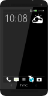
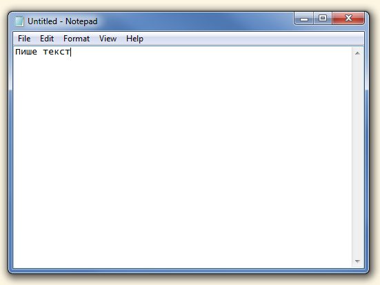
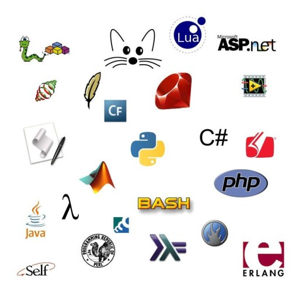
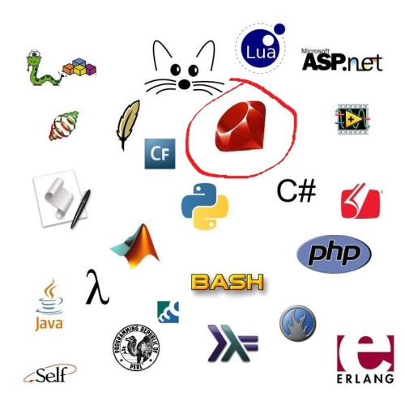

Програмиране с Ruby за начинаещи
Урок 1
Увод. Подготовка.
Автор Борислав Станимиров
Какво е програмиране?
Какво е програма?
Всичко, което „пускате“ на вашия компютър
И не само на компютър...

Как се прави програма?
... от много хора
...
и естествено
Какво прави програмистът?
На специален език
На специален език
На специален език
Защо Ruby?
· · ·
Как да започнем?
Край
От Борислав Станимиров
Урокът е лицензиран с Creative Commons Признание 3.0